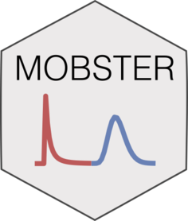

mobster 
mobster is a package that implements a model-based clustering approach to subclonal deconvolution from cancer genome sequencing data (Caravagna et al.; https://doi.org/10.1101/586560, under review).
The package integrates evolutionary theory and Machine-Learning to analyze (e.g., whole-genome) bulk data from cancer samples. This analysis relates to clustering; we approach it via a maximum-likelihood formulation of Dirichlet mixture models, and use bootstrap routines to assess the confidence of the parameters. The package implements S3 objects to visualize the data and the fits.
mobster is part of the evoverse set of R packages to implement Cancer Evolution analyses.